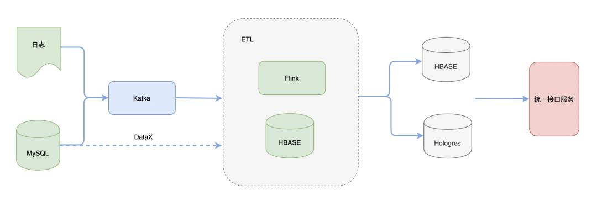
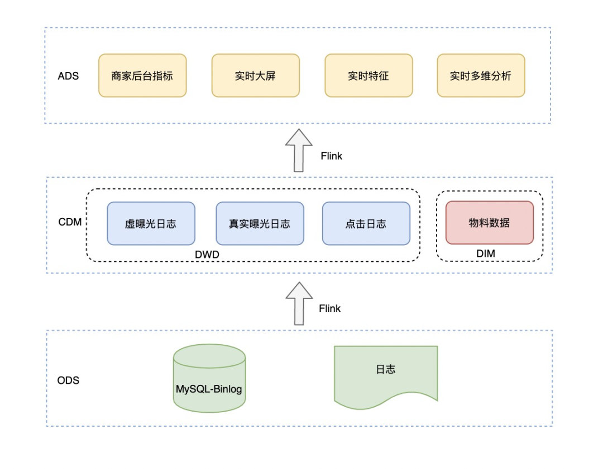
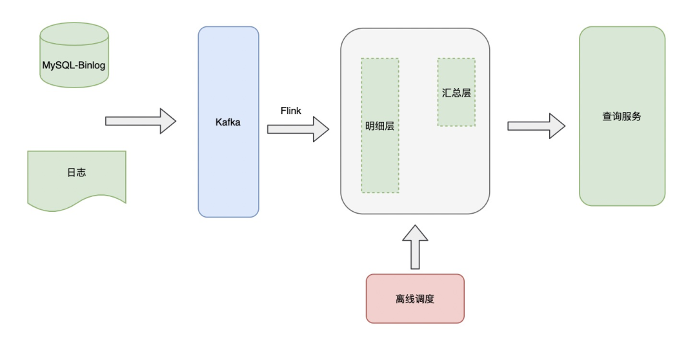

AliExpress基于Flink的广告实时数仓建设
转自公众号：Flink实战剖析
http://mp.weixin.qq.com/s?__biz=MzU5MTc1NDUyOA==&mid=2247485296&idx=1&sn=eb2ce4e9520df3af3d82e8380f5a7c86

Hi，我是王知无，一个大数据领域的原创作者。 放心关注我，获取更多行业的一手消息。
建设背景
广告是目前互联网流量变现的一种重要手段，广告投放的优化很大程度上依赖于广告效果数据，依托于广告曝光、点击、消耗、订单等指标调整广告投放策略，以达到最优投放效果。前期主要提供T+1效果数据，投放策略往往需要第二天才能做出调整，不能及时做出投放优化，特别在一些大促场景，实时优化显得尤为重要，需要及时调整例如人群、地域、出价等策略，以此为背景建设实时数据链路。
目前实时数据的场景主要有以下几种：
实时大屏：提供给运营、产品使用，展示核心的业务指标：曝光、点击、消耗等数据。
实时特征：提供给算法使用，统计用户维度的行为数据。
商家看板：提供给商家使用，展示商家的在不同维度的曝光、点击、消耗等数据。
多维分析：提供给运营、分析师使用，实时分析广告数据。
技术架构
依托新一代实时计算引擎Flink的兴起，在超高性能、数据一致性保障、SQL化编程方式等特点下推动了实时数仓的发展。
当前的整体技术架构图如下：

在数据加工侧，使用Flink作为计算引擎，HBASE作为维表存储数据库，Flink任务在处理的过程中会做一些数据解析、规范化、打宽、聚合等操作；
在数据服务侧，使用两种不同的存储引擎HBASE与Hologres，HBASE提供KV查询，应用于实时大屏、商家看板等固化查询场景， Hologres用于在线分析，应用于多维分析等场景，提供多维分析能力。二者由统一数据接口服务封装，对外提供查询。
数仓架构
数仓的分层搭建需要从复用、成本、质量、扩展性等方面去考虑，实时数仓的搭建，包括层次划分、命名、主题域划分、数据域划分与离线相差不大，目前划分层次如下：

应用层：按照应用场景划分为实时大屏、商家后台实时指标、实时特征、实时多维分析，提供了不同维度的曝光、点击、消耗等数据。
层次更少：离线中会存在汇总层与集市层，但是对于实时来说层次越多延时就越大，另外问题排查的难度就越大；
注重维度整合：离线中一般情况下大宽表出现在集市层，但是对于实时来说，在构建DWD层已经完成了维度整合操作，避免下游join操作，也就是通过空间换时间的策略。
实时OLAP
运营对于广告数据需求的多变性
对mysql中的数据需要某个时间点的分析结果指标
mysql中的数据是可变的，经常会执行一些update操作，例如广告预算数据，预算是可实时变更的，需要知道每小时整的预算额。使用Flink去处理这类问题成本比较高、并且也不可复用。
基于以上问题，提出了实时OLAP的架构。

将明细数据通过Flink处理写入OLAP中，基于OLAP一方面完成在线数据查询，另外一方面通过离线调度处理OLAP中数据，进行一个简单的分层处理，最终提供给上层查询服务使用。
实时保障
整个实时数据体系保障，可分为稳定性保障、数据质量保障两个方面。
稳定性保障
数据质量保障
未来规划
实时DWS层建设
实时OLAP 的深度应用
基于Hologres的HASP架构简化数仓架构


2022年全网首发|大数据专家级技能模型与学习指南(胜天半子篇)
Flink CDC我吃定了耶稣也留不住他！| Flink CDC线上问题小盘点
4万字长文 | ClickHouse基础&实践&调优全视角解析